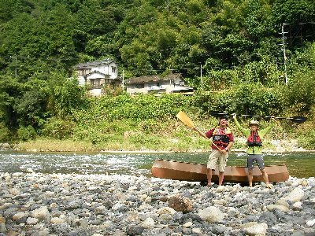
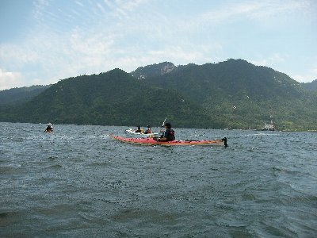

錦川下り | 2009年8月 |
|---|---|
| 今年もやってきました川下り。カヌー（カヤック）で川を流れていくって事ですが、今年は山口県の錦川にチャレンジです。チャレンジと言っても「初心者に優しい川」といううたい文句ですから、問題ナッシング！ ついでに、今回は久しぶりにカナディアンカヌーでチャレンジです。 （注１．カナディアンとは、上部がオープンなカヌーですね。水がガンガン入ってきます。厳しい瀬は無理です） 広島の友人N君と広島駅で合流して、まずお好み焼きを食しに行きました。うん、うまい！広島に来たら、やはりお好み焼きです。おいしいお店に行きましょう！ N君の車にカヌーを載せて、山口県へ。広島市からそんなに遠くないのね。今日は移動日。明日のために、錦川上流の根笠にカヌーを下ろして、中間地点ぐらいの行波にキャンプ。夕食は焼肉とビールの最強タッグです。 夕食後にのんびりしてたら、外人さんんい話し掛けられ、そのまま彼らのキャンプに招待されました。異国に来たかのように外人さんばかりです。米軍（岩国基地）さんのようですね。日本人の方もいらしたので、話は通じたから良かったです。コーラと書いたある酒をもらいました。何が混ざっているのでしょう。N君は本場のバドワイザーを。 | |
 ここをキャンプ地とする！ |  錦川鉄道 根笠駅 |
| 翌朝、朝食もそこそこに車で金帯橋へ。本日のゴールはここです。歩いて近くの清涼線錦川鉄道の川西駅へ。本日下る川を右手に眺めながら、列車で根笠駅に向かいます。 さあ、10時出発！本日のコースは25kmとちょい長め。ガイドブックだとゆっくり行って一泊二日だそうです。そんな時間も無いのでＧＯＧＯ！ 速攻で沈することだけは避けなければ。 （注２．以前、この艇で北海道の釧路川を下ったときに、100mで沈したことが有るから。「べっしーの気ままなところ 2003年 北海道自然に触れる旅を参照） さっそく1．5級位の瀬が現れました。これを果敢にチャレンジ・・・せずにちょっぴり横をポーテージ。いや、いつもの艇なら行くけど、カナディアン二人乗りは、どーしても釧路川を思い出しちゃう。 けど、そこからは瀬があってもドンドン行きます。今回困ったのは、水量が少ないのいか、ザラ瀬（浅くて川底の石が出ちゃってる）になっている箇所が多くて、艇の底を擦りまくりだったこと。果敢に流れに乗っていくと、最後のほうでゴツン、ガッガッと擦る音がぁ〜〜〜 カナディアンってちょっと重心が高いのね。だから初めのうちは、左右に揺れる度に引っくり返りそうになって、ちょっと焦ったけど、慣れれば「こんな感じか〜」と気楽になってきました。 | |
|  さあ、行くぞ！ |  穏やかな流れ。清流ですから |
| お昼近くになっても、中間地点のキャンプ場が見えません。カーブを曲がるたびに「まだか、まだなのか」と気をもんでいました。 午後1時にやっとキャンプ地へ。本当は商店に買出しするつもりでしたがそんな暇もないため、テントに有ったロールパンと、魚肉ソーセージを掴んで、再び乗艇。パンを食べながら川旅を続けました。日が暮れる前にたどり着きたいな〜 沈下橋を2ヶ所抜けたら、今回最大（と思われる）の瀬が登場。しっかり下見をして「行ける」と判断。（それでも、1.5級でしょう。もしかして１級？）底も擦りそうにないし。 以外にすんなり通れて、カーブを曲がったら新幹線の橋が見えました！ あ〜、ゴールは近い。って予想より早いな。 そこから1時間位はのんびり、のんびり行って金帯橋へ。ゴ〜ル！ やりました、25km下って来ました〜！ その日は、町の銭湯につかり、キャンプ地で夕食。焼きソバと餃子、ビール！ これまた最終兵器ばりの黄金トリオです♪ | |
 おお〜、新幹線の線路だー |  ゴールの錦帯橋 |
| 最終日はシーカヤックツアーに参加。広島の宮島に対岸からシーカヤックで行こう！ってツアーです。さすがにカナディアンでは大変なので、お店が企画するツアーに参加。（お店：パドルパーク） 午後1時に宮島口を出発。今日は一人一艇のシーカヤックです。いや〜、シーカヤック良いね。スピードが出る出る。漕げば出るって感じが良いよね。 1時間もしないうちに宮島の鳥居に到着。いままで出来なかった鳥居くぐりを実行。お〜、なんか不思議な風景だ。海を渡るって楽しいな〜 | |
|  いざ、大海原へ（瀬戸内海だけど） |  宮島ですよ〜 |
| 写真＆コメント ｂｙ べっしー | |